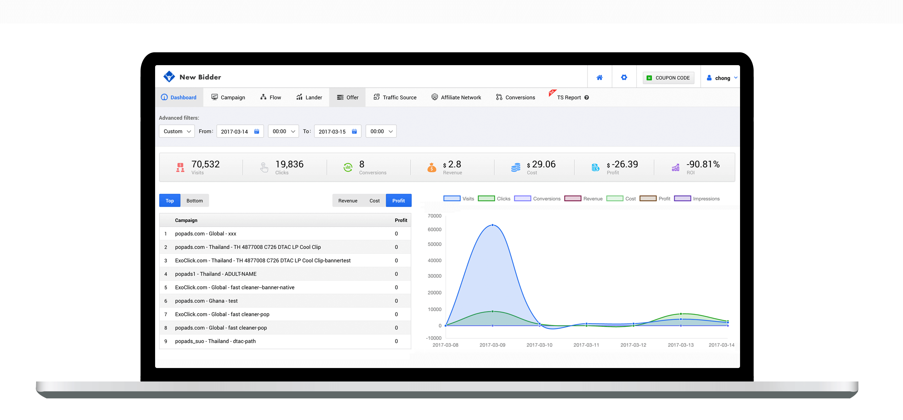

对比其他流量追踪平台, 为什么要选择Newbidder?
上图是Newbidder Dashboard，可以一览广告投放效果。
以下是我使用Newbidder Tracking的心得。这是我目前试过最好的跟踪工具，国人制造，但是强大程度绝对不亚于一些知名的tracker，所以也特意写了这么一个心得用来跟大家分享这个tracker .
Newbidder.com的网站上有一个迷你教程。但是我这篇文章专门写给affiliates，我希望那怕是刚入门的菜鸟都能够根据这篇文章去完成一个campaign的set up。
什么是跟踪工具？
每个成功的联盟营销广告系列都需要有好的的跟踪工具。就像你在寻找宝藏，跟踪工具就是你的宝藏地图。
我们都知道跑广告能赚钱的关键是能够充分的理解和分析数据。
跟踪工具可以告诉你访问者的IP地址，国家/地区，操作系统，转换时间，访问者在移动设备上的运营商信息等等，而这些变量是您用于帮助优化广告并使其获利的重要因素 。
示例1： 一个关于如何使用跟踪工具来获利的实际案例是[website id]变量，跟踪工具可以告诉你什么网站id是Profit的。
示例2： 我购买移动游戏的流量。跟踪工具告诉我，我昨天向iPhone用户推广游戏损失了100美元，推广给Android用户，赚了300美元的利润。这意味着，如果我暂停我的iPhone广告系列，并且只运行我的Android广告系列，我就会赚到更多的利润。
为什么选择Newbidder.com而不选其他的跟踪平台？
Voluum现在在跟踪工具行业占据最大的市场份额。也有用户选择cpvlab，adsbridge，thrive，funnelflux 这些。
Newbidder.com是最新的跟踪工具，也是我个人使用到目前为止感觉最好的。
最棒的是它不是其他跟踪平台的演变。这是一场革命。背后的开发团队重新定义了追踪工具一些其他跟踪平台使用旧的，过时的技术。联盟营销不断发展。你的技术不应该发展吗？
这里是Newbidder及其竞争对手的比较图表:

为什么现在我只使用Newbidder跟踪
你可能会想知道为什么我使用Newbidder而不是任何其他软件。
1.它可以处理巨大的流量。你不必担心你的服务器崩溃，即使你发送了太多的流量。我做了很多移动广告系列，Newbidder点击跳转是最快的。
2.一切都很快。一些其他类型的软件可以保存的数据量有限制。如果你有太多的数据，你的软件减慢。解决这个问题的唯一办法是删除你宝贵的数据。使用Newbidder，我不必这样做。
3.高效开发和更新。他们的团队中有30多个人，他们每天在为Newbidder工作。这意味着它不断更新，并在不断发展。
4. 他有最好的设计，我每天都要盯着tracker好几个小时，我当然希望我能看到一个赏心悦目的界面，它提供的检测和重定向，并且记录了所有我需要的维度。
同时还保持了最低的转换差异。
Newbidder有着近乎完美的转化准确度.如果你在联盟的后台看到了你的Offer有400个转化，那么在Newbidder上也会显示近乎400的转化，而其他类型的追踪软件可能只能做到340个转化，而那60个转化正是你所需要的精确数据用于更有效的优化OFFER，并且它也包含转化上传功能。
Newbidder目前在全世界有8个数据中心（美国，新加坡，悉尼，爱尔兰），而且很快这个数字会提升到12个。这意味着Newbidder将有能力检测流量的来源并且为用户提升优化最佳速度而重新分配线路。例如，亚洲的访问者将被分配到新加坡的数据中心获取流量以提升用户的速度。
它允许你在CDN上托管你的LP，因为LP上面没有动态脚本，因此只需要点击URL就能访问所有的LP。
它还包含了基于用户反馈的升级。我是真的很喜欢Newbidder的团队，他们能跟你有效的沟通，发布你的建议和投票，他们会实时的通知你有关他们的更新，许多其他的TRACKER几乎都是与用户零交流。
这个软件需要多少钱？

他们的定价非常合理，对比其他的追踪软件，他们有免费的套餐而且有更多的EVENT和功能。相比之下，这是世界上最便宜的的套餐。 我希望我的这个指南尽可能的真实，并且能够解决这个软件的一些缺点。 我觉得这个软件最大的缺点就是它不是self-host类型的。
造成这个的原因可能有以下几点:
SaaS (托管解决方案) 是软件开发的未来。所有成功的公司Adobe, Microsoft，Hasoffer，无一例外都是在朝着这个方向发展。它将最新技术的扩展和安全解决方案在任何时间升级，而且不会影响到用户的使用。为一个正在盈利的企业重新构建PHP是不实际的。想象一下，如果你的银行软件是自托管的，它会更加的安全，因为它们使用与银行相同的安全技术。
它更具可扩展性。自托管解决方案的瓶颈是服务器本身。当你向Newbidder.com发送大量的流量时，它可以检测和部署其他云服务器来处理你的流量。 由于其先进的服务器基础设施，停机已经不再是个问题，你的访问将被重新定向到最近的数据中心。但是需要注意到的是，更快的重新定向=更多的钱
它允许Newbidder即时发布新功能而无需安装新版本。我个人来说讨厌安装新版本的软件，因为我担心新版软件会影响到我现有的campaign，造成某些未知的错误，因此我觉得NEWBIDDER的使用无比的简便。
最重要的是，它允许Affiliate专注于做到最好，忘掉服务器停机时间和数据删除等等事情，让Affiliate集中100%注意力在联盟营销上。不能忽视的是现在市场上也有很多Self-host的追踪软件，我不认为任何追踪软件是真正的self-host，除非它是开源的，我可以看到并且调整代码。如果代码已经加密，你如何知道它不会把你的数据发送回它的服务器？
Newbidder团队花了1年的时间来开发这个软件，投入了超过7位数的投资。他们的商业模式是验证过的，他们没有任何理由来窃取你的资料。我和我的附属子公司一直在Newbidder上面跑campaign,对我而言，没有什么比我的声誉更加重要，如果我觉得有任何风险，我不会推荐Newbidder。
每天结束的时候，你必须评估这一天的得失。使用Newbidder能够使我在联盟营销中获得巨大的竞争优势空间。
换一个追踪软件总是非常痛苦的事情，尤其是你现在已经在跑了很多的campaign的情况下，这些被称为转换成本，我们已经习惯了一个工具，并且感觉到使用起来很舒服，很顺手，所以很难切换到其他的追踪软件。事实上，这并不是一个很难做的决定。
一定要记住，成为一个伟大的联盟营销人员，你所需要的是获得更好的技术和竞争优势，尤其是面对市场上有大量竞争的时候。
我是这么做的。
以前使用Voluum，我把所有旧的campaign都留在Voluum上面，这点不变，而把所有新的campaign都设置在Newbidder上。一旦我决定开始使用Newbidder，我们会慢慢的把我现有的所有campaign都移植到Newbidder上。
我熟悉这个软件的过程大概花了我3天的时间，因为我没有任何的指导帮助我，但是现在Newbidder提供了一个迷你指南，当然，那是我写的指南，这将加快你的学习过程。
最令我惊讶的还是他们灵活的报表系统
> > > 注册Newbidder< < <